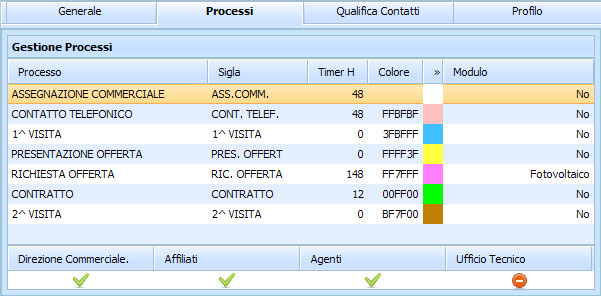

La scheda Processi permette di settare le Azioni possibili sui Clienti:
Processo - Azione che si compie sul Contatto Sigla - sigla riferita all'Azione Timer H - tempo previsto prima che venga mandata una mail di alert Colore - campo non modificabile a mano set color - colore da assegnare alla riga dello Status per identificare l'azione che si sta compiendo sul cliente Modulo - Indica la presenza e il tipo di Modulo collegato al Processo
Aggiungere Processo
Per aggiungere una nuova Processo:
posizionarsi sulla prima riga vuota doppio click del mouse nel campo che si intende scrivere inserire il Processo inserire la Sigla inserire il Timer H scegliere un colore dal set colori inserire Modulo
Modificare Processo
Per modificare una Processo già esistente:
posizionarsi sulla riga che si intende modificare doppio click del mouse nel campo in cui si intende intervenire modificare la dicitura della Processo modificare la dicitura della Sigla modificare il Timer H cliccare sul quadrato del colore e scegliere dal set colori proposti modificare la dicitura del Modulo
Eliminare Processo
Per eliminare un processo bisogna essere sicuri che non sia stato assegnato a nessun Cliente
posizionarsi sulla riga che si intende eliminare doppio click del mouse nel campo in cui si intende intervenire cancellare la dicitura del processo cancellare le restanti voci